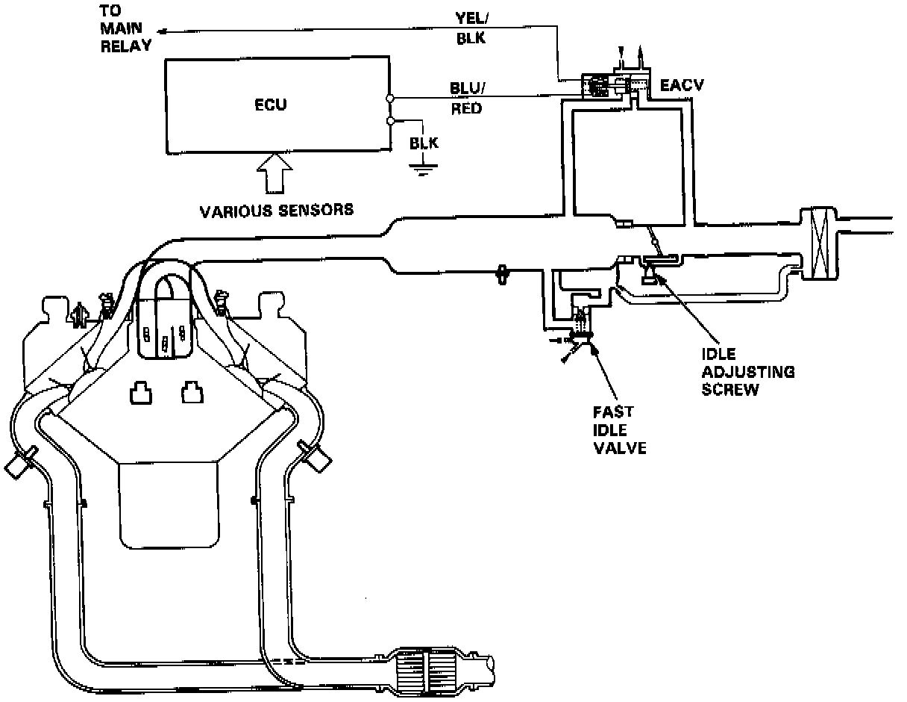
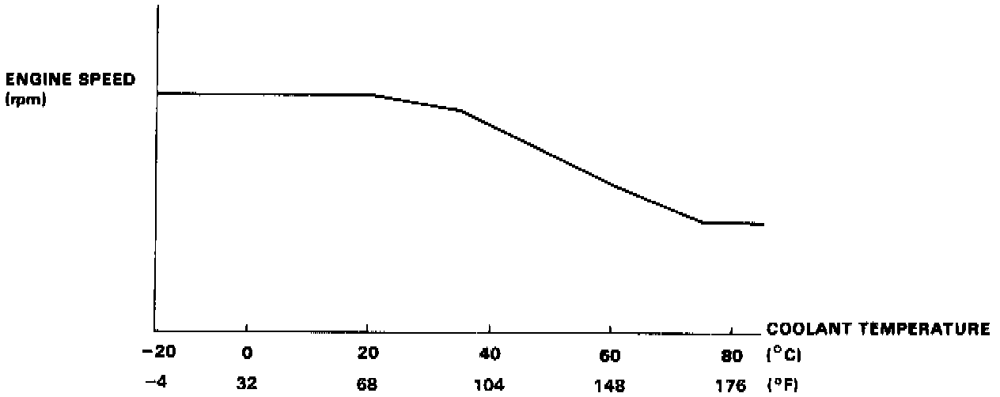

Idle Control System

IDLE CONTROL SYSTEM DESCRIPTION
The idle speed of the engine is controlled by the Electronic Air Control Valve (EACV).
The valve changes the amount of air bypassing into the intake manifold in response to electric current sent from the ECU. When the EACV is activated, the valve opens to maintain the proper idle speed.

OPERATION
1. After the engine starts, the EACV opens for a certain time. The amount of air is increased to raise the idle speed about 150-300 rpm.
2. When the coolant temperature is low, the EACV is opened to obtain the proper fast idle speed. The amount of bypassed air is thus controlled in relation to the coolant temperature.
1. When the idle speed is out of specification and the Check Engine light does not blink CODE 14. check the following items:
- Adjust the idle speed
- Air conditioning signal
- Alternator FR signal
- A/T shift position signal
- M/T neutral switch signal
- M/T clutch switch signal
- Starter switch signal
- Brake switch signal
- P/S oil pressure switch signal
- Fast idle valve
- Air boost valve
- Hoses and connections
- EACV and its mounting 0-rings
2. If the above items are normal, substitute a known-good EACV and readjust the idle speed.
- If the idle speed still cannot be adjusted to specification (and the Check Engine light does not blink CODE 14) after EACV replacement, substitute a known-good ECU and recheck. If symptom goes away. replace the original ECU.